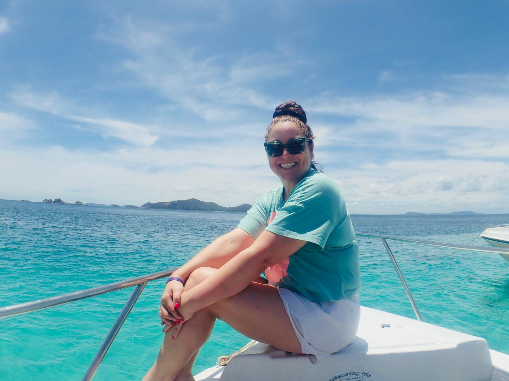

Amy

Amy
Amy, a Sydney-based lawyer, has been a tremendous asset to the Koh Samui Surf Lifesaving Club since July 2026. She has provided valuable assistance in developing the club’s corporate governance documentation, helping establish a stronger and more professional foundation for the organisation’s future.
Amy has also been instrumental in preparing sponsorship and corporate awareness materials, helping the club better present its vision and opportunities to potential corporate partners.
Beyond her professional expertise, Amy has been generously tapping into her Australian surf lifesaving connections and broader global corporate network to help open doors and create opportunities that can strengthen and support the club’s long-term future. Her contribution has already been significant, and her support is helping the club build the structures, relationships and partnerships needed to grow sustainably.